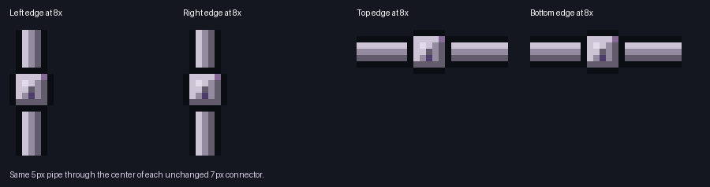
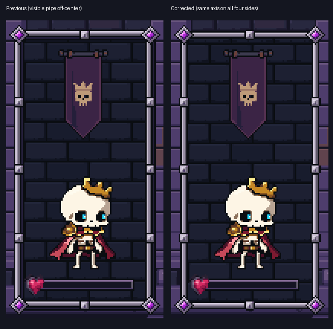
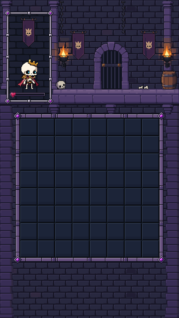

All four edges now use the same five-pixel pipe from your green example, centered inside the unchanged seven-pixel square. The backing fills to the inside edge. Actual Unity preview; production gameplay is unchanged.



Validation notes · Exact pixel checks · Previous review (portrait superseded)
Stage12: layout and reference preflight complete. Dedicated PixelLab plaque source awaits approval for five additional generations. No Stage12 art has been generated.